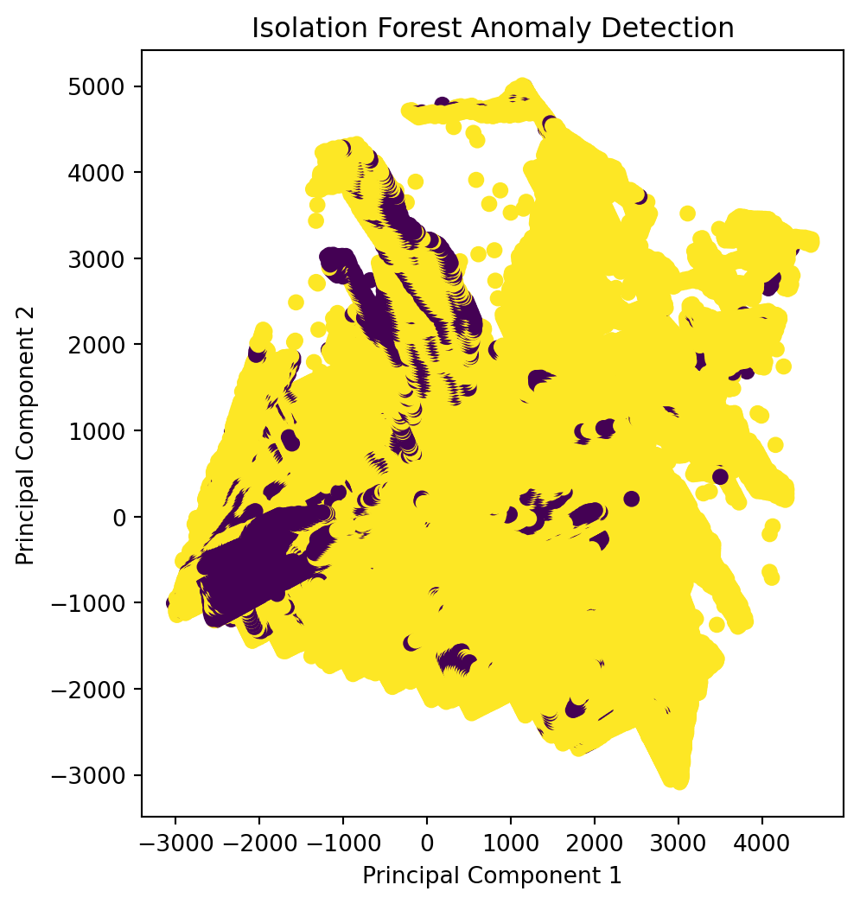
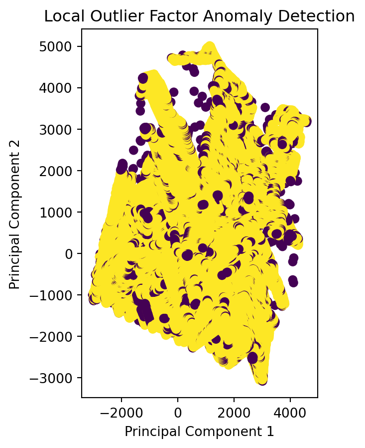

import pandas as pd
from sklearn.datasets import fetch_covtype
from sklearn.ensemble import IsolationForest
from sklearn.neighbors import LocalOutlierFactor
import matplotlib.pyplot as plt
from sklearn.decomposition import PCA
# Loading the Forest Cover Types dataset
cover_types = fetch_covtype()
data = pd.DataFrame(data=cover_types.data, columns=[f'feature_{i}' for i in range(cover_types.data.shape[1])])
data['target'] = cover_types.targetAnomaly Detection Demonstrated in the Forest Cover Types Dataset
Introduction:
Understanding Anomaly Detection is a vital component as it involves identifying patterns or instances that stand out from the majority of data points. Anomalies can signify potential fraud, errors, or abnormal behavior, making their detection critical for decision-making and data quality. In the vast landscape of data, anomalies or outliers can provide crucial insights or indicate potential issues. Thus, this field of Data Analysis specifically focuses on identifying these instances that deviate significantly from the norm within a dataset. This blog post introduces two popular anomaly detection methods: Local Outlier Factor (LOF) and Isolation Forest.
Local Outlier Factor Anomaly Detection Method:
Local Outlier Factor is a robust anomaly detection algorithm, evaluating the local density deviation of individual data points. This method operates by contrasting the density of a specific data point with that of its neighboring points. Instances demonstrating substantially lower density in comparison to their neighbors are assigned higher anomaly scores, signifying their likelihood of being outliers. LOF proves very effective in situations where anomalies are not necessarily far removed from the majority but exhibit a distinctive characteristic of lower density.
Isolation Forest Anomaly Detection Method:
Isolation Forest takes a different approach by isolating anomalies rather than profiling normal instances. It constructs a tree-based structure, isolating anomalies in fewer steps due to their uniqueness. Anomalies are isolated more quickly in the tree, making the isolation path shorter. Isolation Forest is efficient, scalable, and often performs well on high-dimensional data.
Dataset:
The Forest Cover Types dataset is commonly used for classification tasks. It comprises of cartographic variables, including topography, soil types, and wilderness areas, to predict forest cover types. In our anomaly detection example, we consider a specific forest cover type as anomalies, aiming to detect unusual instances in the dataset.
The above section involves importing the required python libraries and loading the Forest Cover Types dataset using fetch_covtype. The data is then converted into a Pandas DataFrame for ease of manipulation.
The following code snippet demonstrates a specific forest cover type (type 1) as anomalies, creating separate datasets for normal and anomaly instances. A combined dataset is then formed for visualization, wich comprises of a subset of normal data and all anomaly data.
# Simplifying by considering one forest cover type (e.g., type 1) as anomalies
# This can be adjusted based on specific use cases
anomaly_label = 1
normal_data = data[data['target'] != anomaly_label]
anomaly_data = data[data['target'] == anomaly_label]
# Combining a subset of normal data with anomaly data for visualization
subset_normal_data = normal_data.sample(n=1000, random_state=42)
combined_data = pd.concat([subset_normal_data, anomaly_data])Next, Principal Component Analysis (PCA) is applied to reduce dimensionality of this dataset by reducing to two principal components, capturing the most significant variations.
# Employing PCA for dimensionality reduction
pca = PCA(n_components=2)
X_pca = pca.fit_transform(combined_data.drop('target', axis=1))Finally, the Isolation Forest is employed to visually represent the anomalies in a scatter plot using the reduced PCA space.
# Applying Isolation Forest
model_iforest = IsolationForest(contamination=0.05)
predictions_iforest = model_iforest.fit_predict(combined_data.drop('target', axis=1))
# Visualizing Isolation Forest results
plt.figure(figsize=(12, 6))
plt.subplot(1, 2, 1)
plt.scatter(X_pca[:, 0], X_pca[:, 1], c=predictions_iforest, cmap='viridis')
plt.title('Isolation Forest Anomaly Detection')
plt.xlabel('Principal Component 1')
plt.ylabel('Principal Component 2')Text(0, 0.5, 'Principal Component 2')
Additionally, a subplot is also created to compare the results obtained using Local Outlier Factor Method to show the difference between these two anomaly detection methods.
# Implementing Local Outlier Factor (LOF)
model_lof = LocalOutlierFactor(n_neighbors=20, contamination=0.05)
predictions_lof = model_lof.fit_predict(combined_data.drop('target', axis=1))
# Visualizing Local Outlier Factor results
plt.subplot(1, 2, 2)
plt.scatter(X_pca[:, 0], X_pca[:, 1], c=predictions_lof, cmap='viridis')
plt.title('Local Outlier Factor Anomaly Detection')
plt.xlabel('Principal Component 1')
plt.ylabel('Principal Component 2')
plt.show()
Thus, anomaly detection proves indispensable in soil microbial analysis and forest coverage assessment, forging a critical link between its importance and the preservation of environmental ecosystems. By pinpointing irregularities in microbial dynamics or unexpected changes in forest vegetation through anomaly detection, we enhance our ability to detect potential threats early on.These methods demonstrate the broader importance of anomaly detection tehcniques in providing actionable insights for environmental conservation and ensuring the long-term health and resilience of ecosystems.
Source:
Image is taken from- https://anomify.ai/blogs/what-is-anomaly-detection